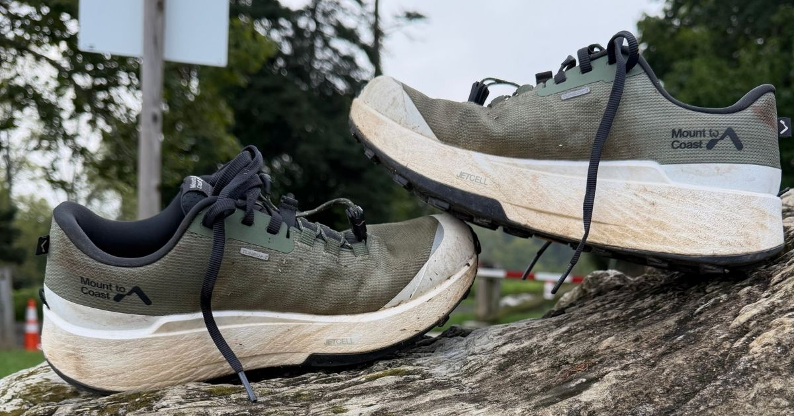
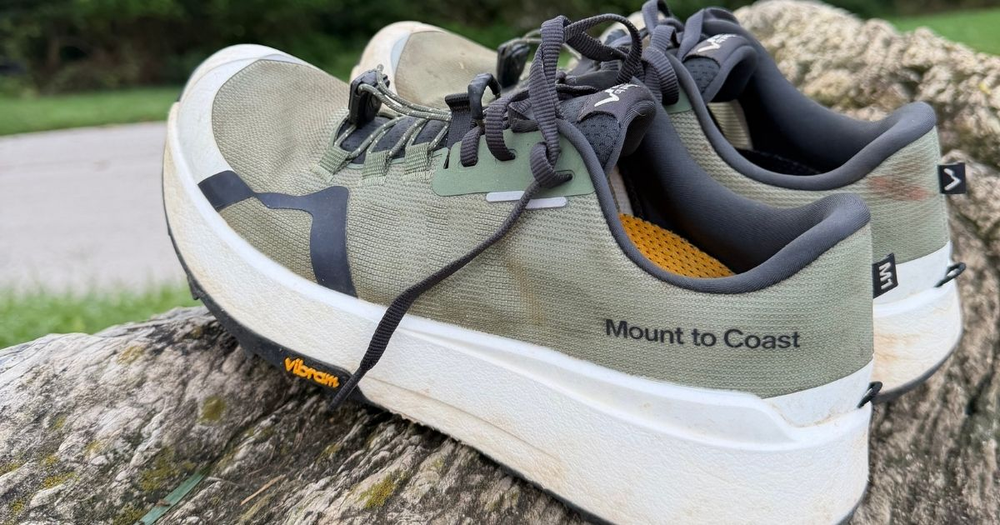
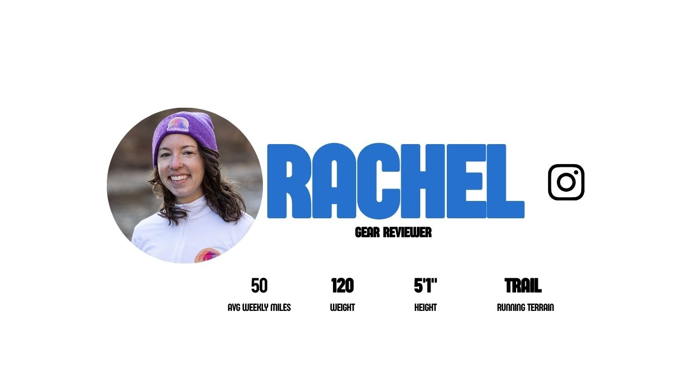

Buy If
- You want a no-frills, non-plated daily trainer with good grip
- You want something similar to the Hoka Mafate or the North Face Altamesa
- You have a narrow to moderate (not full wide) size foot

A max-cushion, all-mountain trail shoe with JETCELL foam and Vibram Megagrip Litebase.
Back to ShoesMount to Coast has been on a pretty solid tear over the past two years. Their rip into the trail running world was taken by storm with hugely successful models like the H1 and the T1, along with the success of their road line. With the popularity of the H1, a lightweight gravel shoe, many wanted something similar but for the trail. So, MtC gave us the M1, a max cushion, all-mountain weapon. Does it build on the intense hype that so many have been witnessing of this brand? Let’s have a look…

Vibram Megagrip Litebase, an all-time winner in my diary. I have zero complaints when it comes to the rubber and security that we are getting underfoot. I went for an 11-miler after some heavy rain and came upon some muddy sections where I felt completely locked in, no worries about slippage whatsoever. These 4mm lugs on a full slab of rubber will let you conquer most terrain with peace of mind.
Mount to Coast uses what they describe as TPEE-blended yarns for the upper. It’s really comfortable and feels soft around the feet. I’ve had no issues in terms of the security and lockdown I feel from the upper hugging around my foot, but I’ll speak to the heel lockdown issues I encountered later.
I got the old scale out and did some weighing of different comparable shoes. The M1 comes in at 11.7 oz for my size 12.5s, which is really great for a shoe of this stature. It’s identical in weight to the TNF Altamesa 500, and a bit lighter than shoes like the Topo Vista, ACG Zegama, and Mafate 5. I felt like the weight it’s at makes perfect sense for the package we get with full rubber coverage and more foam.
The JETCELL midsole is awesome. Great squishy foam with solid responsiveness. It’s a touch softer than the CIRCLECELL foam found in the H1 and C1, which I’m all for. I took these shoes out of the box for 13 miles around Tiger Mountain, and the midsole felt perfectly broken in from the get-go. One thing I love about these Mount to Coast shoes is the durability that comes with their midsoles. MtC claims the JETCELL boasts 2x the strength of PEBA. Overall, what you should know is that the ride is cushioned with good energy return, getting you through long miles on tough terrain.
After recently getting a lot of miles in with the H1s, I’d been really looking forward to getting my hands on the M1s! I loved the energized, responsive ride of the H1s, but admittedly had been taking the all-terrain shoes on quite technical trails. With the M1s being billed as the H1s with a full outsole and deeper lugs, I was excited to try these out.
Just like the H1s, I found the M1s to have a very energized feeling underfoot. I felt like I could push hard, and got great turnover when hitting cruisey sections of the trail. The JETCELL foam is incredibly responsive, and even with a high stack height and plush foam, the shoes never felt “mushy”. The 4mm lugs and full Vibram outsole also grip the rocky, rooty east coast trails with ease. I’ve also become a big fan of the dual lacing system of Mount To Coast shoes. It allows me to change the fit of the shoes depending on the trail conditions, and tighten/loosen throughout a race as your foot may swell.

The fit. I know I’m not alone in this one, as I talked to a few others who encountered a similar experience as mine. I started with my true-to-size 12s, and they were just SO tight. Like toes right up against the bumper…and for an ultra shoe, that’s an absolute no-go. So I was able to exchange for a half size up and went 12.5, much better. However, looking at the platform of the shoe, one would say this has to be a wide shoe. It’s like in between. Something I loved about the H1 was how it felt on foot. I find the M1 to be narrower and the toe box less volume as well. I’ve experienced some pinky toe pinching on every run I have done, whereas I never had this in the H1. The fit and volume are just something to beware of in my book.
I don’t know if it goes hand in hand with the sizing issues I had (probably?), but I had to really cinch down the laces in order to avoid some heel slippage. I definitely felt some heel rubbing on steep ascents. Also wanted to call out that due to the volume in the toe box, I didn’t touch the quick laces near the toe cap. I left that thing as wide as it could possibly go.
So, to me, I think this is a big one. Maybe this doesn’t totally belong in the “bad” category, and it’s not necessarily a feature, but regardless, I wanted to talk about it. I don’t think this shoe has a wow factor. What do I mean by that? I mean that it’s a good shoe. Like if I was getting a performance review at work out of 5, this would get a 3. It’s good, but it doesn’t exceed expectations. The foam is fine, the fit is whack, the grip is stellar, and it looks fabulous. Maybe it’s not fair of me, but I had higher expectations for this shoe after my experience with the H1. I put like 200 miles into that shoe, which is a lot for me having tested so many others. I thought maybe I’d feel that magic I felt when running in the H1 of “man, this is a special shoe.” In all honesty, I really was looking for the more “all-mountain” version of the H1, which I believe a lot of others are looking for out of this shoe too…but it didn’t have it for me.
Despite these being Mount To Coast’s mountain running shoe, I struggled to feel locked in and secure on steep, mountainous descents. Oftentimes I felt like my foot was moving separately from the shoe, which certainly isn’t what you want in technical trail running. I found I can feel a bit more secure if I tighten the lacing system, but at times I’ve had to tighten it so much it can get uncomfortable. Now on more runnable descents and climbs, the shoe feels fine, but unfortunately I live on the east coast and we don’t believe in switchbacks, so every descent is straight down. This is a problem I see with a lot of trail shoes, they’re designed for west coast mountains and forget about the nuances and differences between west coast and east coast running. I’d love to see a trail shoe designed specifically for east coast terrain!
My only other complaint would be that due to the higher stack height, on technical terrain you can sometimes feel a bit less stable than you’d like. Though overall, I’ve taken this shoe on some pretty challenging terrain both in “Rocksylvania” and up in The Catskills, and never fallen or rolled an ankle.
This is a good shoe. It’s solid. Again, it’s that 3 stars out of 5 range for me. While I love some of the features like the JETCELL midsole, the Vibram rubber with the perfect 4mm lugs, and the weight, there were some things I didn’t enjoy as much, like the fit and the low-volume toe box that cause some toe rubbing. If I was a customer looking to buy a shoe and I just wanted an everyday shoe for short to moderate trail runs, this would be a great choice. If I wanted an ultra shoe, in fact, I’m looking for my Grand Canyon Rim to Rim to Rim shoe right now, this shoe wouldn’t be it for me. Personally, because of the fit, but also because there are other shoes out there that just do more for me, like the norda 055, the Hoka Tecton X 4, and the North Face Altamesa 500 v2. This is just my experience in my 35-ish miles in the shoe so far.
If Mount To Coast could find a way to ever so slightly secure the fit of this shoe, it would be perfect in my opinion. I love so much about it - responsiveness, energy return, dual lacing capabilities, grippiness underfoot - and those positives outweigh the negatives in my opinion. It’s been the shoe I’ve reached for on all of my trail runs recently, and will continue to be that shoe. I plan on racing in it at IMTUF in a few weeks, and adding it into my shoe rotation at Mammoth 200 a few weeks after that. Now, both those races are out west, and that’s definitely a part of my decision! Perhaps Mount To Coast can make an east coast version of this shoe in the future!
Maybe? Don’t get me wrong, this is a good shoe. I just am not so sure it’s better than some others on the market right now. For $170 ($25 cheaper), I would take the North Face Altamesa any day. You get a similar foam, great grip, better fit and stability for a cheaper price. If you’re a Mount to Coast loyalist, then maybe it’s the shoe for you. It definitely competes with others in its category, I just think it blends in rather than differentiates itself against its competitors. At almost $200, I personally expected a little more. A lighter package (just know this shoe is 20% heavier than the H1) and wider fit would have put this one across the line for me, but these things have held me back.
Yes! Though it’s a bit higher than a standard trail shoe at $195, I think the responsiveness and energy return you get from the ride is worth it. Mount To Coast does also have a reputation for long livespans, so while you may be paying a bit more, you should expect this shoe to last!
Disclosure: This review reflects Ryan and Rachel’s honest opinions after real-world testing.

